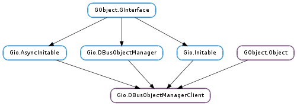

| Subclasses: | Goa.ObjectManagerClient, UDisks.ObjectManagerClient |
|---|
| static | new(connection, flags, name, object_path, get_proxy_type_func, get_proxy_type_user_data, ...) |
| static | new_finish(res) |
| static | new_for_bus(bus_type, flags, name, object_path, get_proxy_type_func, get_proxy_type_user_data, ...) |
| static | new_for_bus_finish(res) |
| static | new_for_bus_sync(bus_type, flags, name, object_path, get_proxy_type_func, get_proxy_type_user_data, cancellable) |
| static | new_sync(connection, flags, name, object_path, get_proxy_type_func, get_proxy_type_user_data, cancellable) |
| get_connection() | |
| get_flags() | |
| get_name() | |
| get_name_owner() |
| Name | Type | Flags | Description |
|---|---|---|---|
| bus-type | Gio.BusType | w/c | The bus to connect to, if any |
| connection | Gio.DBusConnection | r/w/c | The connection to use |
| flags | Gio.DBusObjectManagerClientFlags | r/w/c | Flags for the proxy manager |
| get-proxy-type-destroy-notify | int | r/w/c | The Gio.DBusProxyTypeFunc user data free function |
| get-proxy-type-func | int | r/w/c | The Gio.DBusProxyTypeFunc pointer to use |
| get-proxy-type-user-data | int | r/w/c | The Gio.DBusProxyTypeFunc user_data |
| name | str | r/w/c | Name that the manager is for |
| name-owner | str | r | The owner of the name we are watching |
| object-path | str | r/w/c | The object path of the control object |
| Name | Parameters | Return | Description |
|---|---|---|---|
| interface-proxy-properties-changed | Gio.DBusObjectProxy, Gio.DBusProxy, GLib.Variant, list | Emitted when one or more D-Bus properties on proxy changes. The local cache has already been updated when this signal fires. Note that both changed_properties and invalidated_properties are guaranteed to never be None (either may be empty though). This signal exists purely as a convenience to avoid having to connect signals to all interface proxies managed by manager. This signal is emitted in the thread-default main loop that manager was constructed in. | |
| interface-proxy-signal | Gio.DBusObjectProxy, Gio.DBusProxy, str, str, GLib.Variant | Emitted when a D-Bus signal is received on interface_proxy. This signal exists purely as a convenience to avoid having to connect signals to all interface proxies managed by manager. This signal is emitted in the thread-default main loop that manager was constructed in. |
| Name | Type | Access |
|---|---|---|
| parent_instance | GObject.Object | r |
Bases: GObject.Object, Gio.AsyncInitable, Gio.DBusObjectManager, Gio.Initable
Gio.DBusObjectManagerClient is used to create, monitor and delete object proxies for remote objects exported by a Gio.DBusObjectManagerServer (or any code implementing the org.freedesktop.DBus.ObjectManager interface).
Once an instance of this type has been created, you can connect to the Gio.DBusObjectManager ::object-added and Gio.DBusObjectManager ::object-removed signals and inspect the Gio.DBusObjectProxy objects returned by Gio.DBusObjectManager.get_objects ().
If the name for a Gio.DBusObjectManagerClient is not owned by anyone at object construction time, the default behavior is to request the message bus to launch an owner for the name. This behavior can be disabled using the Gio.DBusObjectManagerClientFlags.DO_NOT_AUTO_START flag. It’s also worth noting that this only works if the name of interest is activatable in the first place. E.g. in some cases it is not possible to launch an owner for the requested name. In this case, Gio.DBusObjectManagerClient object construction still succeeds but there will be no object proxies (e.g. Gio.DBusObjectManager.get_objects () returns the empty list) and the Gio.DBusObjectManagerClient :name-owner property is None.
The owner of the requested name can come and go (for example consider a system service being restarted) – Gio.DBusObjectManagerClient handles this case too; simply connect to the GObject.Object ::notify signal to watch for changes on the Gio.DBusObjectManagerClient :name-owner property. When the name owner vanishes, the behavior is that Gio.DBusObjectManagerClient :name-owner is set to None (this includes emission of the GObject.Object ::notify signal) and then Gio.DBusObjectManager ::object-removed signals are synthesized for all currently existing object proxies. Since Gio.DBusObjectManagerClient :name-owner is None when this happens, you can use this information to disambiguate a synthesized signal from a genuine signal caused by object removal on the remote Gio.DBusObjectManager. Similarly, when a new name owner appears, Gio.DBusObjectManager ::object-added signals are synthesized while Gio.DBusObjectManagerClient :name-owner is still None. Only when all object proxies have been added, the Gio.DBusObjectManagerClient :name-owner is set to the new name owner (this includes emission of the GObject.Object ::notify signal). Furthermore, you are guaranteed that Gio.DBusObjectManagerClient :name-owner will alternate between a name owner (e.g. :1.42) and None even in the case where the name of interest is atomically replaced
Ultimately, Gio.DBusObjectManagerClient is used to obtain Gio.DBusProxy instances. All signals (including the org.freedesktop.DBus.Properties::PropertiesChanged signal) delivered to Gio.DBusProxy instances are guaranteed to originate from the name owner. This guarantee along with the behavior described above, means that certain race conditions including the half the proxy is from the old owner and the other half is from the new owner problem cannot happen.
To avoid having the application connect to signals on the returned Gio.DBusObjectProxy and Gio.DBusProxy objects, the Gio.DBusObject ::interface-added, Gio.DBusObject ::interface-removed, Gio.DBusProxy ::g-properties-changed and Gio.DBusProxy ::g-signal signals are also emitted on the Gio.DBusObjectManagerClient instance managing these objects. The signals emitted are Gio.DBusObjectManager ::interface-added, Gio.DBusObjectManager ::interface-removed, Gio.DBusObjectManagerClient ::interface-proxy-properties-changed and Gio.DBusObjectManagerClient ::interface-proxy-signal.
Note that all callbacks and signals are emitted in the thread-default main loop that the Gio.DBusObjectManagerClient object was constructed in. Additionally, the Gio.DBusObjectProxy and Gio.DBusProxy objects originating from the Gio.DBusObjectManagerClient object will be created in the same context and, consequently, will deliver signals in the same main loop.
| Parameters: |
|
|---|
Asynchronously creates a new Gio.DBusObjectManagerClient object.
This is an asynchronous failable constructor. When the result is ready, callback will be invoked in the thread-default main loop of the thread you are calling this method from. You can then call Gio.DBusObjectManagerClient.new_finish () to get the result. See Gio.DBusObjectManagerClient.new_sync () for the synchronous version.
| Parameters: | res (Gio.AsyncResult) – A Gio.AsyncResult obtained from the Gio.AsyncReadyCallback passed to Gio.DBusObjectManagerClient.new (). |
|---|---|
| Raises: | GLib.GError |
| Returns: | A Gio.DBusObjectManagerClient object or None if error is set. Free with GObject.Object.unref (). |
| Return type: | Gio.DBusObjectManagerClient |
Finishes an operation started with Gio.DBusObjectManagerClient.new ().
| Parameters: |
|
|---|
Like Gio.DBusObjectManagerClient.new () but takes a Gio.BusType instead of a Gio.DBusConnection.
This is an asynchronous failable constructor. When the result is ready, callback will be invoked in the thread-default main loop of the thread you are calling this method from. You can then call Gio.DBusObjectManagerClient.new_for_bus_finish () to get the result. See Gio.DBusObjectManagerClient.new_for_bus_sync () for the synchronous version.
| Parameters: | res (Gio.AsyncResult) – A Gio.AsyncResult obtained from the Gio.AsyncReadyCallback passed to Gio.DBusObjectManagerClient.new_for_bus (). |
|---|---|
| Raises: | GLib.GError |
| Returns: | A Gio.DBusObjectManagerClient object or None if error is set. Free with GObject.Object.unref (). |
| Return type: | Gio.DBusObjectManagerClient |
Finishes an operation started with Gio.DBusObjectManagerClient.new_for_bus ().
| Parameters: |
|
|---|---|
| Raises: | |
| Returns: | A Gio.DBusObjectManagerClient object or None if error is set. Free with GObject.Object.unref (). |
| Return type: |
Like Gio.DBusObjectManagerClient.new_sync () but takes a Gio.BusType instead of a Gio.DBusConnection.
This is a synchronous failable constructor - the calling thread is blocked until a reply is received. See Gio.DBusObjectManagerClient.new_for_bus () for the asynchronous version.
| Parameters: |
|
|---|---|
| Raises: | |
| Returns: | A Gio.DBusObjectManagerClient object or None if error is set. Free with GObject.Object.unref (). |
| Return type: |
Creates a new Gio.DBusObjectManagerClient object.
This is a synchronous failable constructor - the calling thread is blocked until a reply is received. See Gio.DBusObjectManagerClient.new () for the asynchronous version.
| Returns: | A Gio.DBusConnection object. Do not free, the object belongs to manager. |
|---|---|
| Return type: | Gio.DBusConnection |
Gets the Gio.DBusConnection used by manager.
| Returns: | Zero of more flags from the Gio.DBusObjectManagerClientFlags enumeration. |
|---|---|
| Return type: | Gio.DBusObjectManagerClientFlags |
Gets the flags that manager was constructed with.
| Returns: | A unique or well-known name. Do not free, the string belongs to manager. |
|---|---|
| Return type: | str |
Gets the name that manager is for, or None if not a message bus connection.
| Returns: | The name owner or None if no name owner exists. Free with GLib.free (). |
|---|---|
| Return type: | str |
The unique name that owns the name that manager is for or None if no-one currently owns that name. You can connect to the GObject.Object ::notify signal to track changes to the Gio.DBusObjectManagerClient :name-owner property.